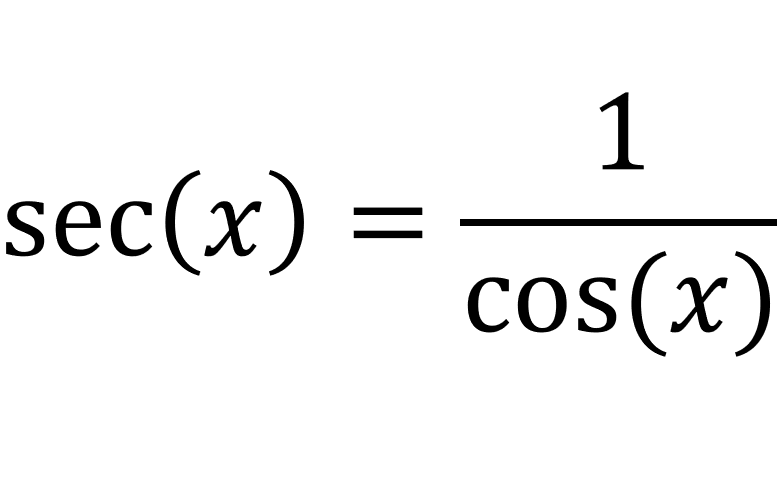
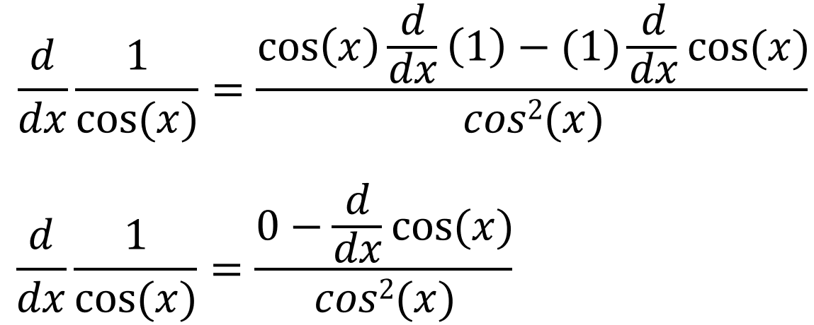
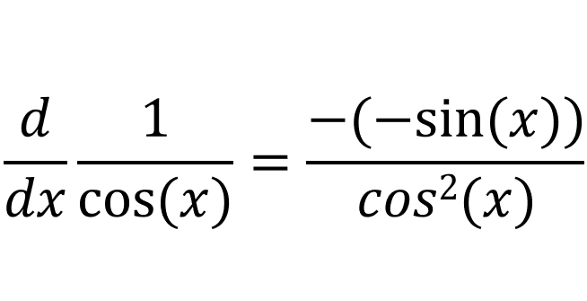
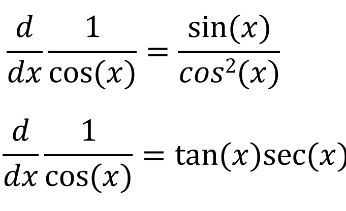
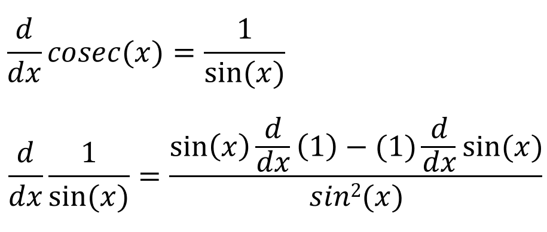
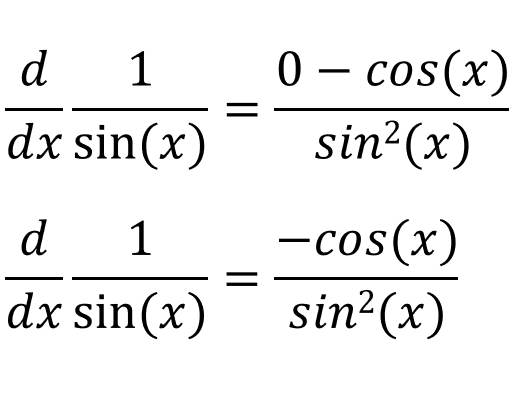
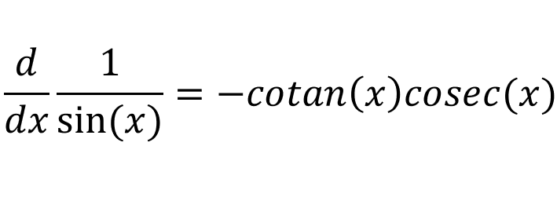

We can write sec(x) in terms of cos(x):
So differentiating sec(x) would just mean to differentiate 1/cos(x):
If we simplify this further:
We know that tan(x) = sin(x)/cos(x), so:
So the derivative of sec(x) is sec(x)tan(x). Now lets try to find the derivative of cosec(x). Finding the derivative of cosec(x) is the same as finding the derivative of 1/sin(x):
If we simplify the above equation:
Since cotan(x) = cos(x)/sin(x), we get the derivative as -cosec(x)cotan(x):
